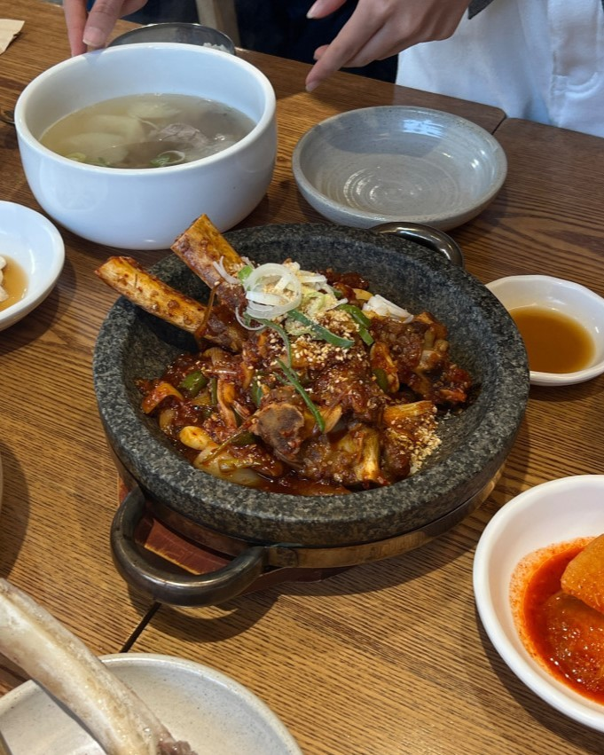
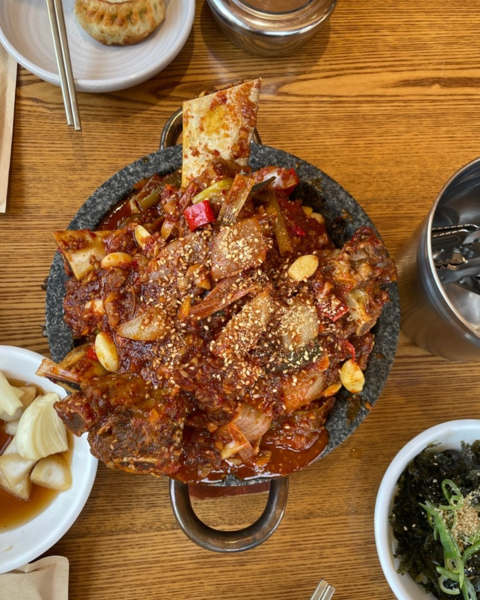

대구 찜갈비·갈비찜 맛집
— 반월당 약전골목, 매운 소갈비찜 마늘폭탄
대구 갈비찜 맛집을 찾으신다면 먼저 알아둘 것 — 대구에서 찜갈비는 그냥 갈비찜이 아닙니다. 마늘과 고춧가루가 듬뿍 든 양념에 소갈비를 재워 매콤하게 쪄내고, 남은 양념에 밥을 비벼 먹는 대구 10미의 음식입니다. 청우해장의 소갈비찜 마늘폭탄은 그 맛을 반월당역에서 도보 약 7분, 약전골목에서 냅니다.

대구 찜갈비, 왜 마늘인가 — 동인동 찜갈비 골목 이야기, 그리고 약전골목 청우해장
대구 찜갈비는 1970년대 동인동 찜갈비 골목에서 시작됐습니다. 양은 냄비에 소갈비를 넣고 다진 마늘과 고춧가루를 아낌없이 얹어 쪄내는 방식 — 달콤한 간장 갈비찜과는 전혀 다른, 얼큰하고 진한 맛입니다. 대구 사람들은 갈비를 다 먹고 남은 양념에 밥을 비벼 먹는 것까지를 찜갈비라고 부릅니다. 대구시가 정한 대구 10미 열 가지 가운데 하나입니다.
「대구 동인동 찜갈비」를 찾아 오셨다면 — 동인동 골목은 지금도 대구시청 뒤편에 남아 있고, 청우해장에서는 도보 약 30분(1.9km) 거리입니다. 저희는 동인동이 아니라 약령시 약전골목에 있습니다 — 더현대 대구에서 도보 약 6분, 반월당역에서 약 7분, 동성로 중심에서 약 15분. 동인동까지 가지 않고 반월당·동성로 근처에서 대구식 갈비찜을 드시려는 분께 맞는 자리입니다.
청우해장의 소갈비찜 마늘폭탄은 이름 그대로입니다. 특제 소스에 마늘을 듬뿍 올려 대구식 찜갈비의 매운맛을 그대로 내되, 하루 종일 고아 낸 소고기 국물을 쓰는 집답게 갈비는 부드럽게, 양념은 깊게 갑니다.


대구 매운 갈비찜 — 간장 갈비찜과 다른 점
대구 매운 갈비찜은 간장보다 고춧가루와 다진 마늘을 중심으로 양념해 빛깔이 붉습니다. 「대구 마늘 갈비찜」「대구 매운 찜갈비」도 같은 음식을 가리킵니다.
대구 소갈비찜을 찾으신다면 — 청우해장의 소갈비찜 마늘폭탄은 돼지갈비가 아니라 소갈비를 이 대구식 양념으로 쪄 냅니다. 매운맛이 걱정되면 맵지 않은 맑은 해장국(12,000원)이나 청우 약전 소갈비탕(16,000원)을 하나 곁들여 번갈아 드시면 됩니다.
대구 찜갈비 먹는 법 — 이렇게 드시면 좋습니다
- 나눠 먹기 — 갈비찜 하나에 갈비탕이나 해장국을 곁들이면 맵고 맑은 맛이 번갈아 옵니다.
- 남은 양념에 밥 비비기 — 대구식의 마무리. 공깃밥을 추가하세요.
- 매운 것 못 드시는 분과 함께 — 같은 상에 맵지 않은 약전 소갈비탕과 아롱사태 수육이 있어 어르신·아이 동반 모임에 맞습니다.
- 술 한잔 — 콜키지가 가능해 와인을 들고 오시는 분도 있습니다.
가격표 — 대구 갈비찜과 곁들일 것
| 메뉴 | 가격 | 매운맛 | 메모 |
|---|---|---|---|
| 소갈비찜 마늘폭탄 | 22,000원 | 매움 | 대구식 찜갈비 · 나눠 먹기 |
| 소꼬리찜 | 49,000원 | 없음 | 새콤한 소꼬리찜 · 가족 모임 상차림 |
| 청우 약전 소갈비탕 | 16,000원 | 없음 | 대표 메뉴 · 어르신·아이 |
| 대구 얼큰해장국 (따로국밥) | 13,000원 | 얼큰 | 대구 10미 · 해장 |
| 맑은 해장국 | 12,000원 | 없음 | 매운맛 사이에 곁들이는 맑은 국물 |
| 아롱사태 수육 (소/대) | 18,000 / 23,000원 | 없음 | 안주로도 좋습니다 |
전체 메뉴와 최신 가격은 홈페이지 메뉴에서 볼 수 있습니다.
대구 갈비찜 포장·예약·영업시간
- 포장 — 소갈비찜 마늘폭탄은 포장됩니다. 전화(053-255-7052)로 먼저 주문해 주세요. 배달은 없습니다. 포장되는 메뉴 전체와 주문 방법은 대구 포장맛집 안내에 모아 두었습니다.
- 예약·단체 — 40석이고, 단체는 40명까지 전화로 예약받습니다.
- 영업시간 — 매일 11:00–22:00 · 브레이크타임 15:00–17:00 · 라스트오더 21:00.
반월당 갈비찜 — 반월당역·더현대·동성로에서 오는 길
반월당에서 갈비찜 드시러 오시는 길: 반월당역(1·2호선) 15번 출구(또는 더현대 대구)에서 백화점 옆 골목을 따라 북쪽으로 올라가 한의약박물관을 지나 약전골목에서 왼쪽으로 — 걸리는 시간은 아래 표와 같습니다. 근대골목·계산성당 산책 코스의 점심 자리이기도 합니다.
동성로 갈비찜을 찾으신다면 — 청우해장은 동성로 안에 있는 가게가 아닙니다. 동성로 중심에서 걸어서 약 15분, 중앙로역에서 약 10분 거리의 약전골목 안에 있습니다. 반월당역·더현대 대구 쪽에서 오시면 더 가까워서, 저희를 반월당 찜갈비 집으로 기억해 두시면 찾기 쉽습니다. 동성로·반월당 주변 밥집 이야기는 동성로 맛집·반월당 맛집 글에 따로 적었습니다.
| 출발 | 걸어서 |
|---|---|
| 더현대 대구 | 약 6분 (382m) |
| 반월당역 15번 출구 | 약 7분 (499m) |
| 중앙로역 | 약 10분 |
| 동성로 중심 | 약 15분 |
| 동인동 찜갈비 골목 | 약 30분 (1.9km) — 저희 가게는 이 골목에 있지 않습니다 |
자주 묻는 질문
- 대구 찜갈비가 무엇인가요?
- 대구시가 정한 대구 10미 중 하나로, 소갈비를 마늘과 고춧가루가 듬뿍 든 양념에 재워 매콤하게 쪄내는 대구식 갈비찜입니다. 동인동 찜갈비 골목에서 시작됐고, 얼큰한 양념에 밥을 비벼 먹는 것이 대구식입니다.
- 청우해장 소갈비찜 마늘폭탄은 얼마인가요?
- 22,000원입니다. 특제 소스에 마늘을 듬뿍 올린 대구식 찜갈비로, 갈비탕이나 해장국과 함께 나눠 드시기 좋습니다.
- 매운 것을 못 먹는 사람이 같이 가도 되나요?
- 네. 같은 상에서 맵지 않은 청우 약전 소갈비탕(16,000원), 아롱사태 수육(18,000원~), 맑은 해장국(12,000원)을 함께 드실 수 있어 어르신·아이 동반 모임에 맞습니다.
- 대구 동인동 찜갈비 골목에 있는 가게인가요?
- 아닙니다. 청우해장은 약령시 약전골목(남성로 11)에 있고, 동인동 찜갈비 골목은 저희 가게에서 도보 약 30분(1.9km)입니다. 같은 대구식 마늘·고춧가루 양념 소갈비찜을 반월당역에서 도보 약 7분 거리에서 냅니다.
- 소갈비찜 포장 되나요?
- 네, 포장 가능합니다. 053-255-7052로 미리 전화 주문해 두시면 기다리지 않고 가져가실 수 있습니다. 배달은 하지 않습니다.
- 어디에 있고 예약은 어떻게 하나요?
- 대구 중구 남성로 11, 약령시 약전골목 안입니다. 반월당역 15번 출구에서 도보 약 7분, 더현대 대구에서 도보 약 6분. 단체 40명까지 053-255-7052로 전화 예약을 받습니다.
- 대구 매운 갈비찜은 간장 갈비찜과 무엇이 다른가요?
- 간장 양념의 달콤한 갈비찜과 달리 고춧가루와 다진 마늘을 듬뿍 넣어 맵고 진하게 쪄 냅니다. 대구에서는 찜갈비라고 부르고, 남은 양념에 밥을 비벼 먹습니다. 청우해장의 소갈비찜 마늘폭탄(22,000원)이 이 방식입니다.
- 반월당이나 동성로에서 걸어갈 수 있나요?
- 네. 더현대 대구에서 도보 약 6분, 반월당역 15번 출구에서 약 7분, 중앙로역에서 약 10분, 동성로 중심에서 약 15분입니다. 동인동 찜갈비 골목까지 가지 않고 대구 시내에서 대구식 찜갈비를 드실 수 있습니다.
마늘을 산처럼, 대구식 찜갈비
청우해장 — 소갈비찜 마늘폭탄 · 소꼬리찜 · 약전 소갈비탕 · 따로국밥
매일 11:00–22:00 (브레이크 15:00–17:00) · 더현대 대구에서 도보 약 6분 · 반월당역에서 약 7분